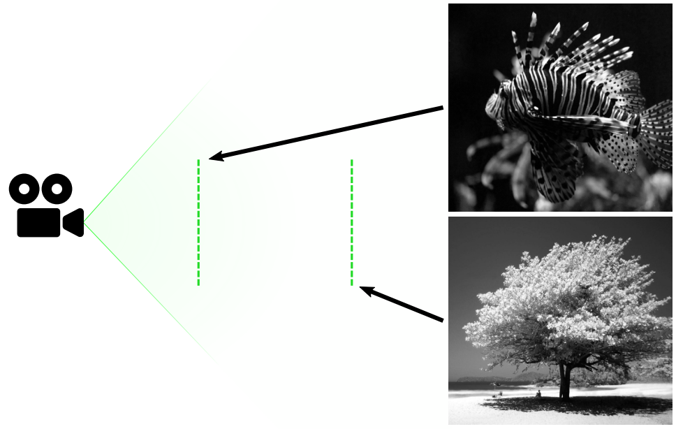
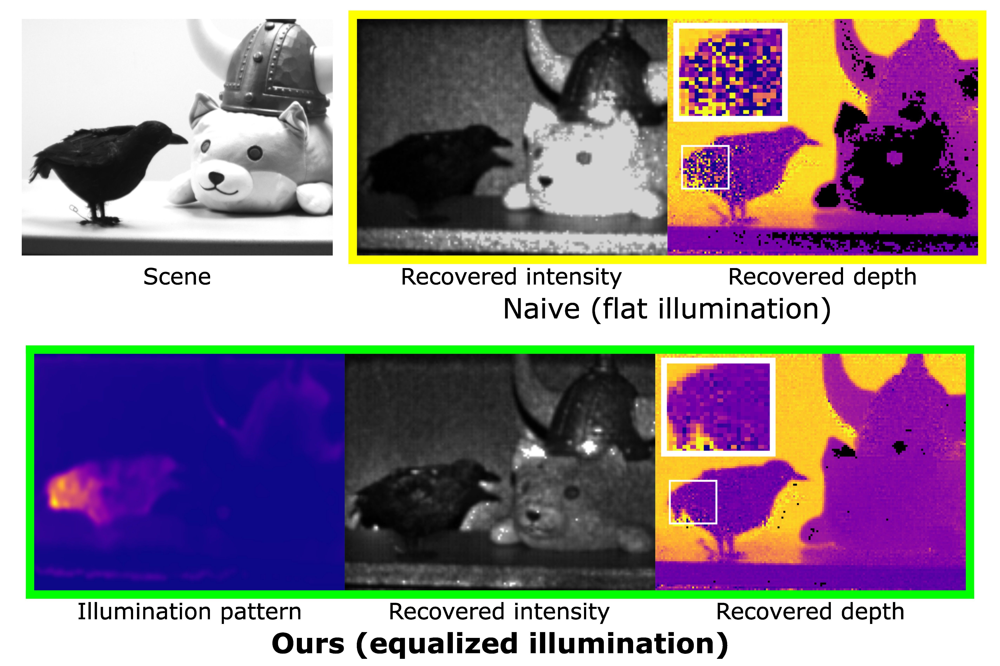
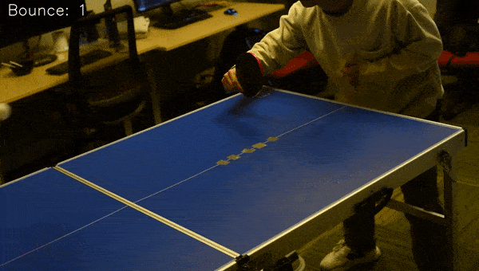
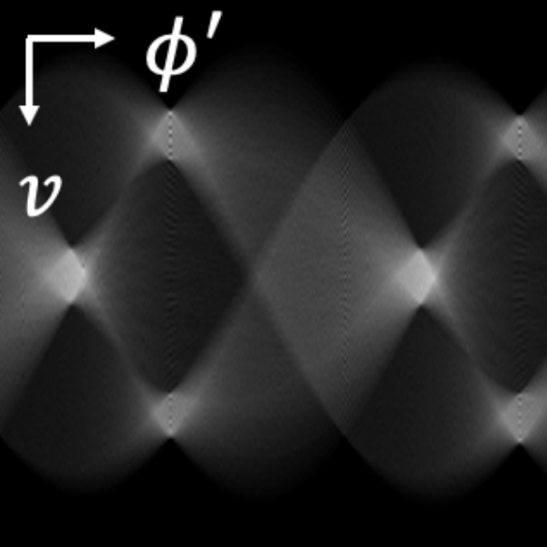
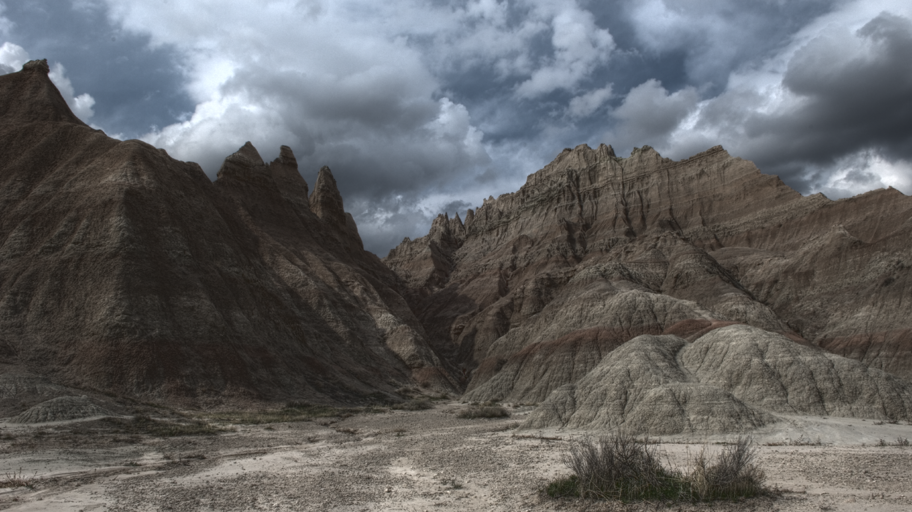
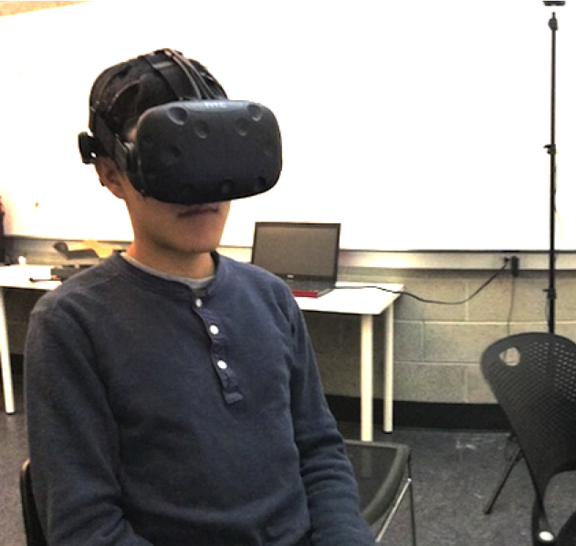
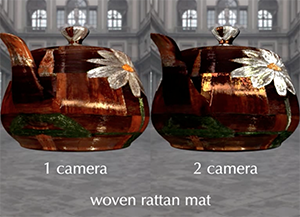

Dorian Chan
| Computational Imaging Researcher |
| Fishing Devotee | | Musician Wannabe |
I'm a PhD student in the Computer Science Department at Carnegie Mellon University, where I currently work on computational imaging problems. I'm advised by Matthew P. O'Toole.
I'm also currently one of the department ombudspersons. Please feel free to reach out if there's anything you'd like to chat about!
I quite enjoy fishing. I'm also a big Denver Nuggets fan.
drop me a line: dorianychan@gmail.com
I am looking for academic or industry jobs starting Fall 2025. Let me know if you have any leads!
Some of my past work:

Dorian Chan, Matthew O'Toole, Sizhuo Ma, Jian Wang
ECCV 2024

Dorian Chan, Matthew O'Toole
SIGGRAPH ASIA 2023

Dorian Chan, Mark Sheinin, Matthew O'Toole
ICCV 2023

Tianyuan Zhang, Mark Sheinin, Dorian Chan, Mark Rau, Matthew O'Toole, and Srinivasa Narasimhan
CVPR 2023

Mark Sheinin, Dorian Chan, Matthew O'Toole, Srinivasa Narasimhan
CVPR 2022 - Oral, Best Paper Honorable Mention (~Top 2 paper)!!

Dorian Chan, Srinivasa Narasimhan, Matthew O'Toole
CVPR 2022

Mariko Isogawa, Dorian Yao Chan, Ye Yuan, Kris Kitani, Matthew O'Toole
ECCV 2020

Dorian Yao Chan, James F. O'Brien
SIGGRAPH'20 Posters - ACM Student Research Competition winner!!

Reza Abbasi-Asl, Mohammad Keshavarzi, Dorian Yao Chan
NER'19

Rachel A. Albert, Dorian Yao Chan, Dan B Goldman, James F. O'Brien
EGSR 2018